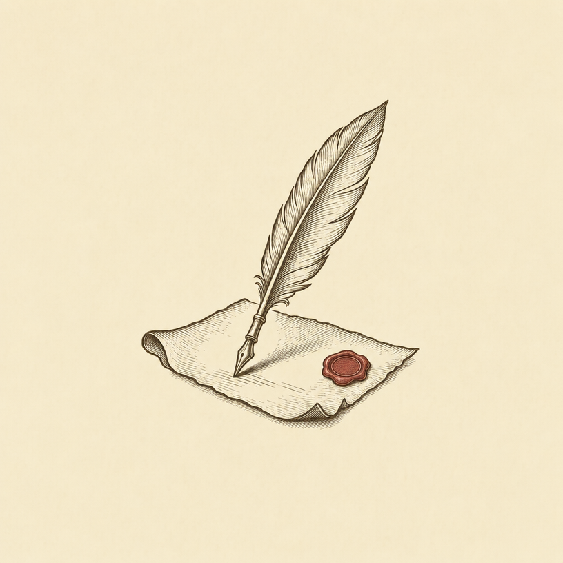
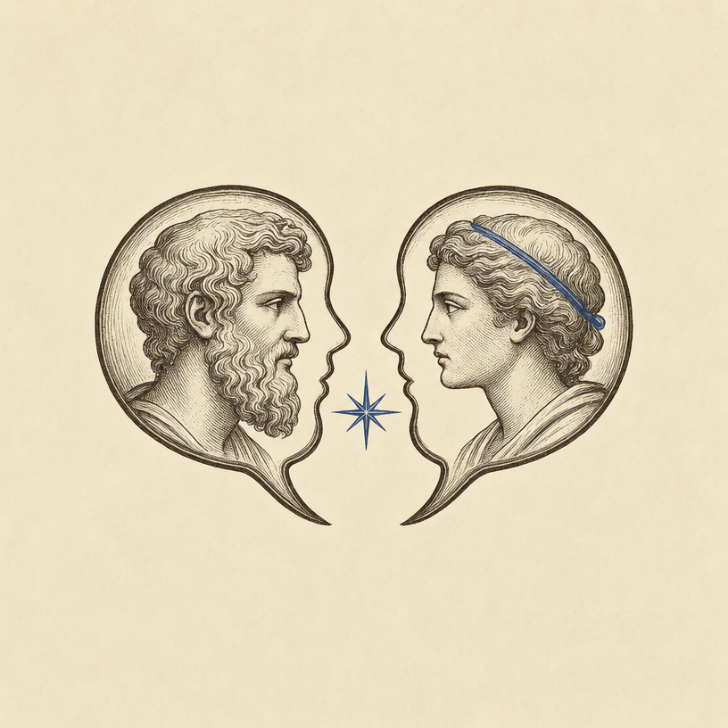
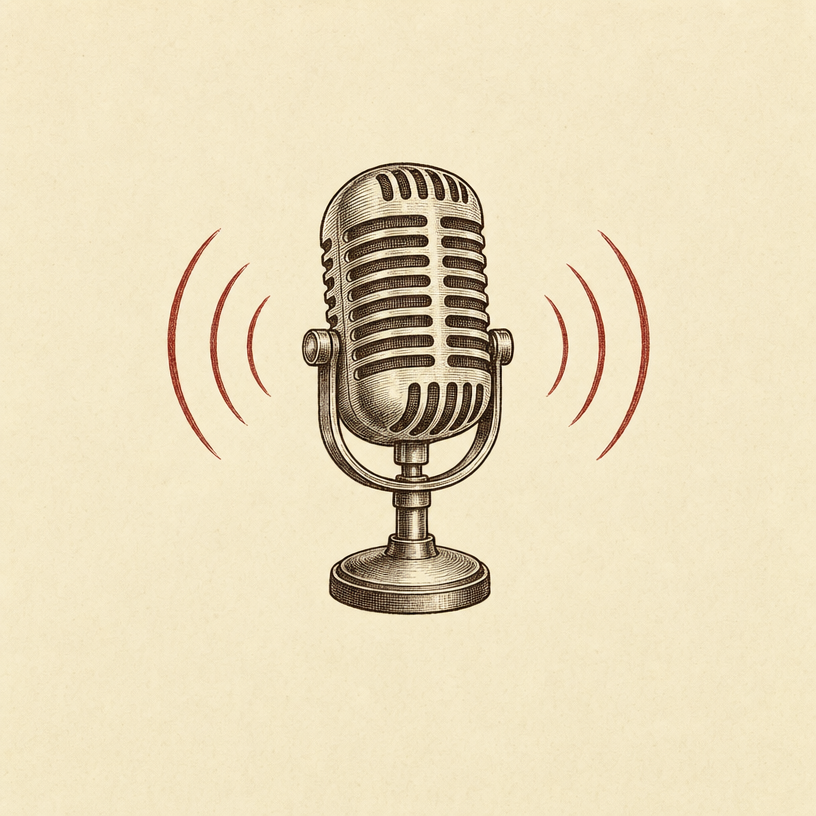
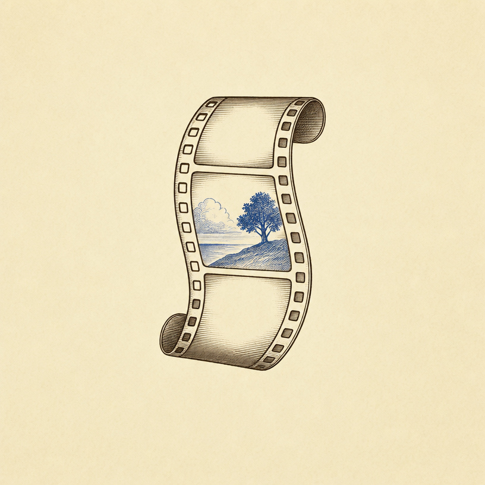
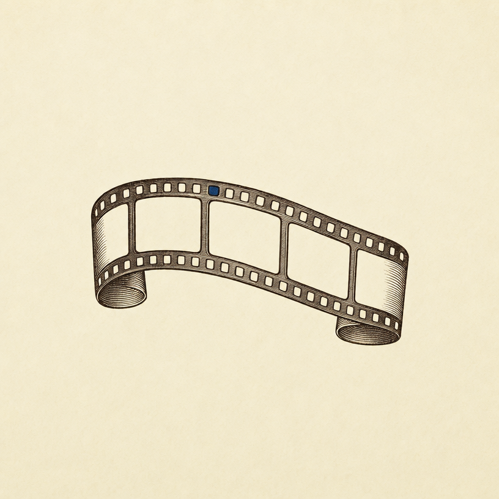
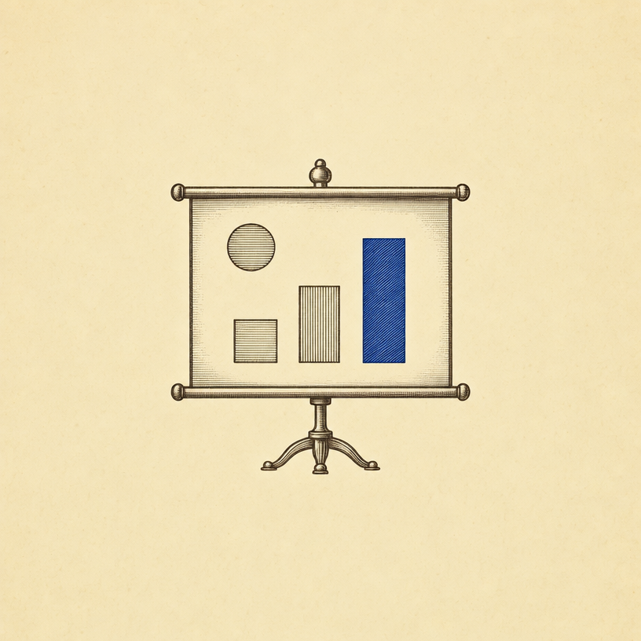
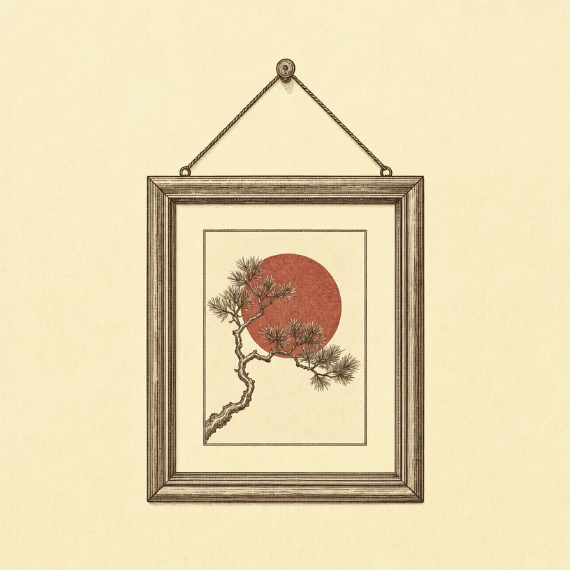
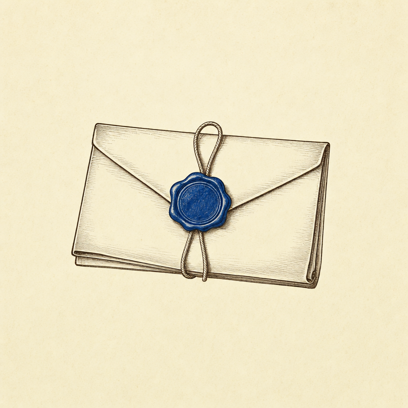
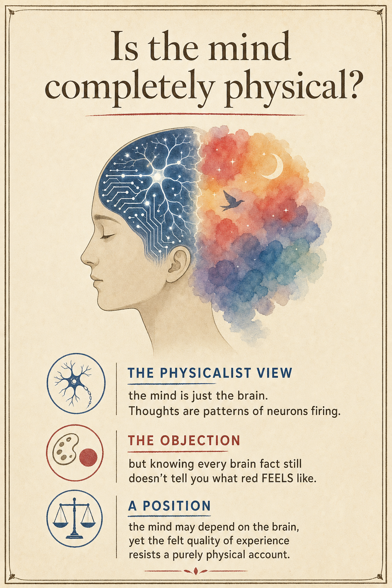

The Issues Study asks one thing: choose a philosophical question, take a side,
and defend it. How you present that defence is wide open. Walk the gallery —
every exhibit is the same task, done a completely different way.
Room One
The forms you can choose
Same 800-word brief (or 5-minute spoken version). Eight different vessels.
Each card shows what the form is good at — and the first move students made to pull it off.

Form 01
The essay
Prose, structured clearly. Define the issue, explain both sides, weigh them, defend your own. This form makes it easiest to show all four criteria at once.
First move: write the question as a real question — one where sitting on the fence isn't an option.

Form 02
The dialogue
Stage a conversation between two thinkers who disagree. You prove you understand both positions by letting them argue it out. Plato wrote almost everything this way.
First move: pick two philosophers who'd genuinely clash on your question, not two who agree.

Form 03
The podcast
Up to five minutes of spoken audio. Great if you think better out loud. Script it tightly — five minutes is shorter than it sounds.
First move: write a full script, then read it aloud and cut every sentence that doesn't earn its place.

Form 04
The short film
Make your argument visual. One student used the film Big Fish — its story raised the same question the issue raises — and explained how the plot argued their position.
First move: find a film whose story already wrestles with your question.

Form 05
The parable
Write a story that embodies the disagreement. One student invented a tale of an alcoholic's two sons to explore free will, fate, and determinism. The story carries your argument — it doesn't just illustrate one; the clash between the characters is your claim.
First move: design a story where each character lives out a different philosophical position.

Form 06
The slide deck
Keynote or PowerPoint, built to be presented aloud. Let images carry the argument, not walls of text. Design it — don't just paste your essay onto slides.
First move: one idea per slide, one image that makes that idea land.

Form 07
The illustrated poster
One striking visual that holds the whole argument. Hard to do well — every word has to earn its place. See the worked example below.
First move: boil your position down to one sentence a stranger could grasp in five seconds.

Form 08
The letter to the editor
Argue your case to a real audience in a real voice. Persuasive, personal, and pointed — but it still has to weigh the other side fairly.
First move: picture the reader who disagrees with you, and write to change their mind.
Your guide
Ask the Curator
The Curator knows every exemplar in this gallery. Ask how someone tackled
free will, or what a good question looks like, and it will pull the example
into the panel and walk you through the choices they made. It shows you
how others did it — it won't do yours for you.
The Curator
Your exhibition guide · shows examples, never writes your study
On display
Nothing on display yet. Ask the Curator a question and the
matching exemplar will appear here, with the key passages highlighted.
Room Two
Meet the thinkers
Big study-posters for the philosophers you're most likely to use — each one
the thinker's face, their one big idea, and their position in plain language.
Click any poster to see it full size.
↔ scroll for more · click a poster to enlarge

A worked poster
"Is the mind completely physical?"
Here's the poster form done well. One question. One image that carries the
whole argument — a head that's half circuitry, half feeling. Three short
sections: the position, the objection, and a reasoned answer.
Notice how little text it uses. A poster can't hide a weak argument behind
word count — so every line has to be the clearest version of itself. That's
the challenge, and the reward.
The gold standard
An A-grade essay, annotated
This is an official SACE A-grade exemplar (euthanasia, through Aristotle's
Virtue Ethics). The red notes in the margin point out the moves that earn the
marks. Read it for the shape, not the topic.
A · Ethics · ~800 words
It defines the issue precisely
"Euthanasia is the act of painlessly putting to death persons suffering from painful or incurable diseases. It can be classified as active or passive, voluntary or involuntary…"
Before arguing anything, it pins down exactly what's being discussed — and shows the issue has parts. That's KU1.
It explains a position in its own terms
"In exploring Virtue Ethics, Aristotle believed that everything has a purpose and man's purpose was happiness… virtues are found in the balance between excess and deficiency — courage between cowardice and foolhardiness."
It explains the philosopher fairly and accurately, before judging — you can't critique what you haven't first understood.
It applies the idea — then turns it both ways
"You could claim euthanasia is the courageous act… On the other hand, it could be seen as cowardice, lacking endurance and violating the sanctity of life."
The same principle is argued in both directions. This is the critical-analysis move (CA1) most students skip.
It reaches a careful, reasoned position
"The application of Virtue Ethics appears too vague for sensitive issues such as euthanasia. Perhaps Aristotle would conclude that a person achieving Eudaimonia would have the wisdom to make the right decision."
It commits to a view that follows from the analysis — not a personal opinion bolted on at the end. And it acknowledges every source.
Seen one that sparks something? Take your own question to the chamber, or start shaping it in the drafting scaffold.